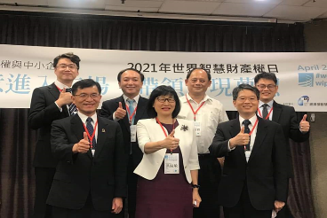
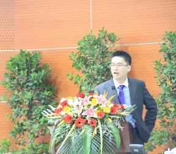
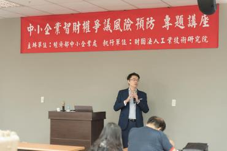
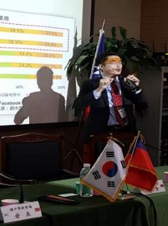
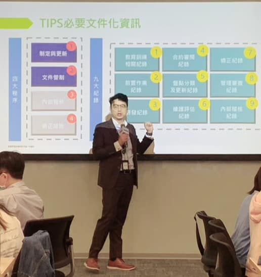
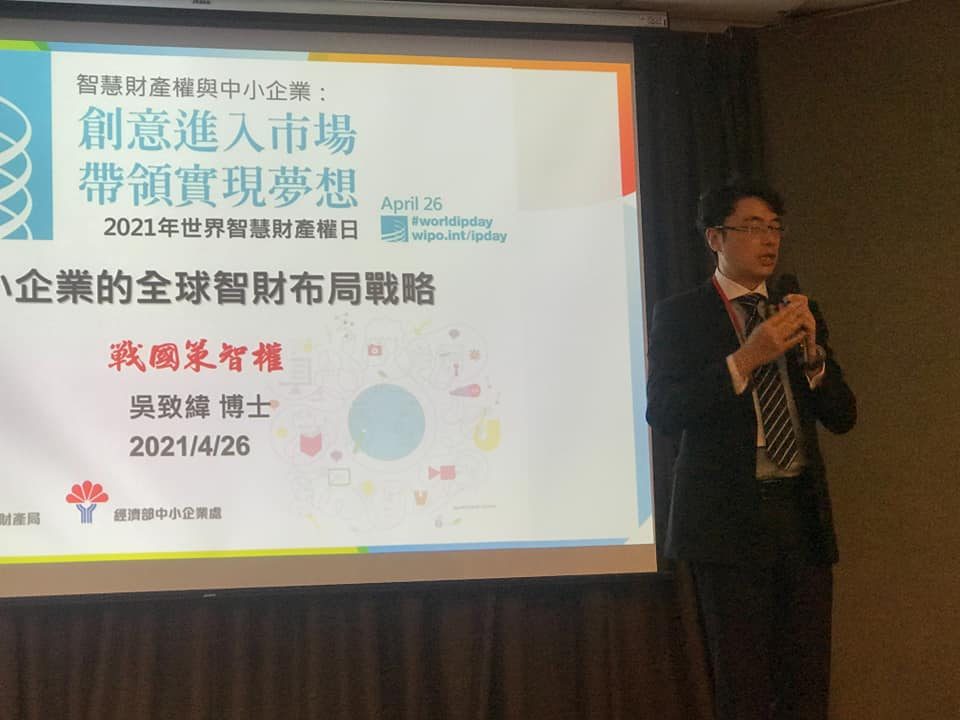

國立清華大學
生命科學研究所
碩士／博士
PROFILE / EXPERTISE
吳致緯博士以近二十年智慧財產實務經驗，協助企業將技術、制度與商業成長目標整合為可執行的策略。
FOUNDER & PRINCIPAL ADVISOR
以技術理解、法律判斷與治理觀點，協助企業建立長期競爭優勢。
吳致緯博士在智慧財產領域已有近 20 年經歷，擅長智慧財產分析、專利布局與制度治理，並具備豐富的生物醫學企業輔導經驗。
曾協助多家上市公司建置機密資訊、營業秘密、專利及商標管理制度，並取得經濟部台灣智慧財產管理規範（TIPS）A 級、AA 級驗證；亦持有 ISO 27001:2022 資訊安全管理系統主導稽核員證照。
EDUCATION
生命科學研究所
碩士／博士
法律研究所科技法律組
碩士
SELECTED EXPERIENCE
橫跨上市櫃企業、國際顧問、研究機構與創新社群。
ACTIVITIES & SPEAKING
參與國際研討會、企業培訓、產業論壇及校園活動，持續推廣智慧財產與治理實務。






QUALIFICATIONS
01ISO 27001:2022 Lead Auditor 主導稽核員
02經濟部台灣智慧財產管理規範（TIPS）A級自評員
03經濟部台灣智慧財產管理規範（TIPS）AA級顧問
04經濟部 TIPS（A級）暨公司治理之智財法遵培訓課程講師
05產業技術標準化高級師資；智慧財產人員職能認證
06MMOT 與英國牛津大學 ISIS 技術交易培訓結訓
LET'S CONNECT